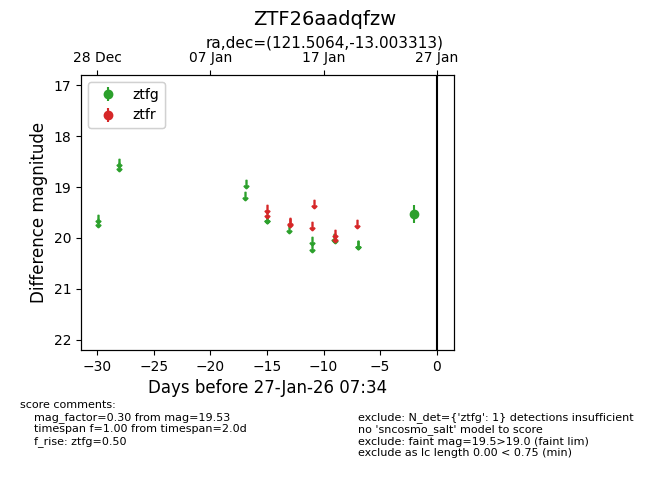
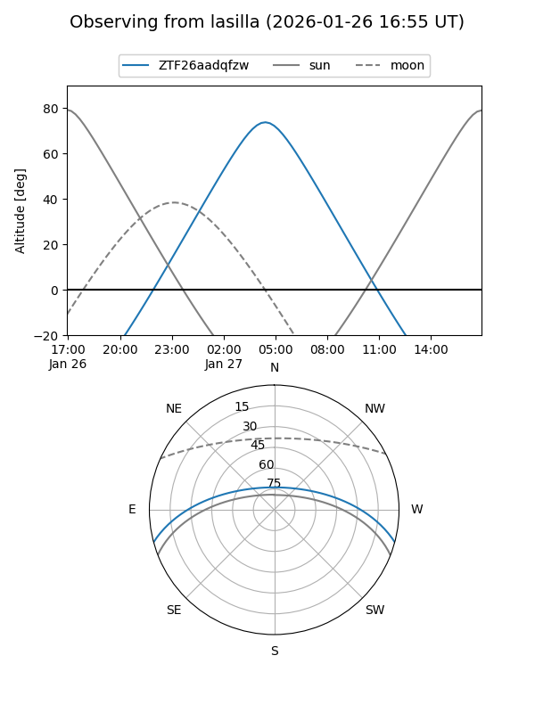
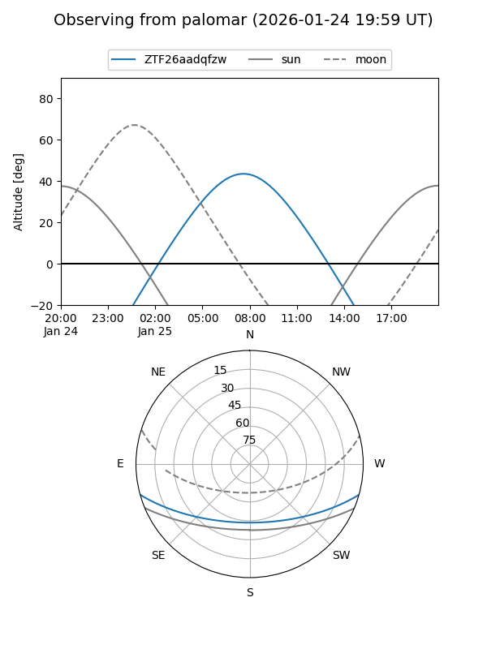

ZTF26aadqfzw
Target ZTF26aadqfzw at 2026-01-25 07:36
Aliases and brokers:
FINK: link
Lasair: link
ALeRCE: link
alt names
ZTF26aadqfzw (ztf,fink_ztf)
Coordinates:
equatorial (ra, dec) = 121.5064,-13.00331
equatorial (HMS+DMS) = 08:06:01.53,-13:00:11.93
galactic (l, b) = (233.2758,+10.05908)
Flags:
Photometry:
last ztfg=19.53
1 ztfg detections
Lightcurve

Visibility


Additional plots